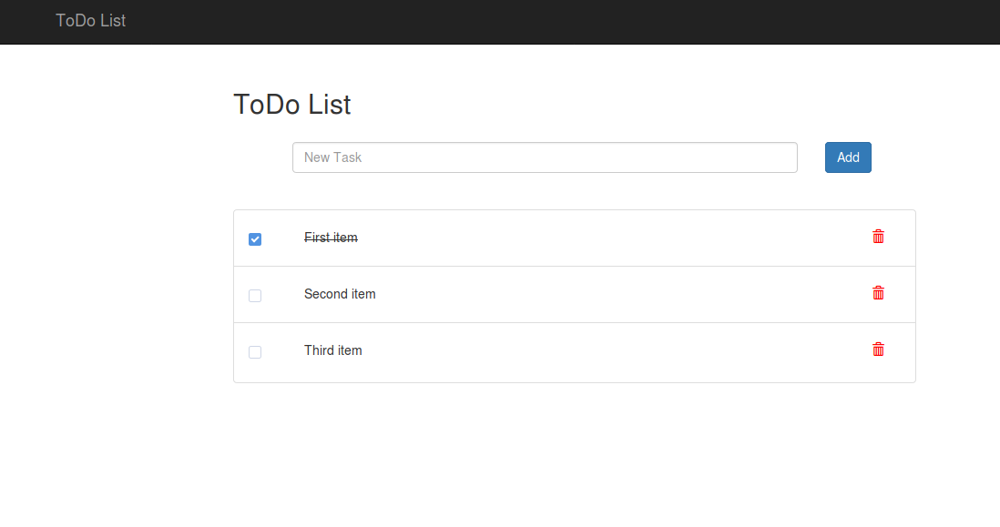

Problem/Data Domain
Overview of the general topic
In today's fast-paced world, people often have multiple task need to work on within a time period, and there’re might be difficulties of task managing and organizing. Use student as an example, there’re will be times a student have different assignment from different class with different due date, a todo list application can help them build a schedule on when to work on what assignment base on the due date with addition feature such as set up different priority.
Information Technology Problem/Existing Attempt To Solve This Problem
Todo list app is pretty common nowaday, but some of them were not free or with only limited feature on the free version, by creating a completely free todo list app, we can make it more accessible to everyone.
One example is the Anydo web app, it provides a todo list with a free and pay verision, while the free version was missing some feature such as able to create recurring tasks.
App description
Basic idea
This ToDo list website app will allow user to create tasks, after user enter their data, it will generate a summary page that have all the list (1 feature). Being able to modify the task, such as mark the task as complete, update the task detail, or delete tasks. (1 feature) The user will also able to search and filter the task by priority or deadline (0.5 feature).
User cases
The biggest user of this todo list we have target for students, all the feature and perks that inside this app will be design great for students. And because our app will be easy to use and be free to use, so it will solve the problem that as the students can't affort those apps.
This is one of the example we are about to do, of crouse will looks more fancy and more functions including allow user to set the time slots,deadlines,mark done/not done etc.